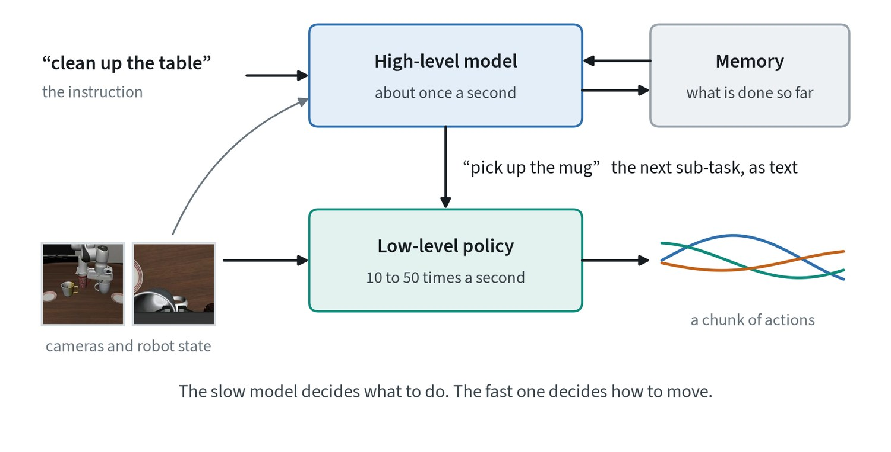

Why actions are generated, not regressed
The obvious way to train a policy is regression: show the model an observation and penalise the distance between its output and the demonstrated action. This fails for a simple reason. Demonstrations contain more than one good answer.

One person steers left around an obstacle and another steers right. A model trained with mean squared error learns the average of the two, which goes straight through the obstacle. The fix is to treat action prediction as generation: start from random noise and refine it into one consistent chunk of future actions, conditioned on recent camera images and the robot’s state. Diffusion Policy showed in 2023 that this gives large gains on manipulation tasks. Most recent systems use flow matching for the same job because it needs fewer refinement steps. The note on generative modeling explains both.
Anatomy of a vision-language-action model
A vision-language-action model, or VLA, is a vision-language model that has been taught to output robot actions.

Camera images go through one or two vision encoders. The instruction is tokenised as text. The robot’s own state is projected into a token. All of these enter a pretrained language-model backbone, which reads them together. An action head then turns the backbone’s output into a short sequence of future actions, called a chunk.
The division of labour matters. The vision encoder and backbone arrive already trained on web-scale images and text, so they know what a cup is and what “on the shelf” means. Robot data only has to teach the acting part: the state projector, the action head, and usually a fine-tune of the backbone.
A real example: π0

π0, published by Physical Intelligence in 2024, follows this pattern closely. The backbone is PaliGemma, a vision-language model of about 3 billion parameters built from the SigLIP vision encoder and the Gemma language model. Beside it sits a separate transformer of about 300 million parameters, the action expert, whose tokens attend to everything the backbone computed.
The action expert is trained with flow matching and produces a chunk of 50 continuous actions in about ten refinement steps. At 50 Hz that chunk is one second of motion. Most of the parameters are spent on understanding the scene; a small expert turns that understanding into movement.
Two ways to output actions

| Discrete action tokens | Continuous action head | |
|---|---|---|
| How | Sort each action value into a bin and predict the bins like words | A small network refines a whole chunk from noise, reading the backbone’s features |
| Strengths | No new architecture; works with any language model; trains stably | Smooth and precise; a few steps yield many actions |
| Costs | One token per value is slow; bins limit precision | An extra module and loss; it must not degrade the backbone |
Neither has won outright. Newer tokenisers compress a whole chunk into far fewer tokens, and several systems train with tokens but act with a continuous head.
Long tasks: planning and memory
A policy that maps the current image to the next second of motion can pick up a cup. Clearing a table is a different kind of problem: it needs a plan, and it needs to remember what has been done.


The common answer is two levels. A high-level model, usually a vision-language model, looks at the scene about once a second and names the next sub-task in words. A low-level policy carries out that sub-task at control rate. The high level never commands a motor and the low level never has to think beyond a few seconds.
Memory is the weaker half. Most policies see only the last frame or two, so they cannot know whether a drawer has already been checked. Options in use are a short written log kept by the high-level model, a few stored keyframes, and longer visual context, which is costly. Tasks that depend on what is no longer visible remain hard.
One policy for many robots
No single robot has enough data. Training one policy on data from many different robots is how the field pools what exists, and it works because most of what a policy learns is not about the body: what objects are, what the instruction means, what the task requires. The body-specific part is the output.

- A shared action space. Write every robot’s action as the motion of its hand. This is why end-effector actions dominate cross-robot datasets. It covers arms and breaks down for hands, legs and mobile bases.
- One padded vector. Fix the action size to that of the largest robot and mask what a smaller robot does not use. It is simple, and the model has to learn from context which slots mean what.
- A head per robot. Share the backbone and give each body a small input and output module. A new robot needs only a new head, trained on a little of its own data.
Whichever is used, three details decide whether it works. Tell the model which robot it is, through a token or through the body state, or it will average incompatible conventions. Normalise each robot’s actions with its own statistics. And weight the mixture so the target robot is not drowned out, as the note on robot data shows.
| Transfers well | Transfers poorly |
|---|---|
| Recognising objects and scenes | Reach and workspace |
| Understanding the instruction | Gripper or hand geometry |
| The order of steps in a task | Camera placement |
| Rough motion toward a target | Control rate, forces and contact |
The realistic claim is modest. Cross-robot training does not usually let a policy run on a body it has never seen. It means a new body needs far fewer demonstrations than starting from nothing. A further step is to predict something with no body in it at all, such as future video, tracked points or latent actions, and leave a small robot-specific module to turn that into motor commands.
Where the field is heading
- Dual-system designs. A large, slow model understands the scene a few times a second while a small, fast model produces actions at control rate.
- Embodied reasoning. Before acting, the model states the sub-task, the objects involved and where they are. This helps on long tasks and makes failures easier to explain.
- Cross-embodiment training. One model is trained on data from many different robots, so a new robot needs less data of its own.
Common mistakes
- Mixing action spaces. A dataset recorded as absolute joint positions fed to a policy that expects relative hand motion will not crash. The robot will simply move wrongly.
- Trusting offline error. A policy with a low action error on held-out data can still fail when its own actions change what it sees next.
- Adding refinement steps. More steps cost latency, and a late action is a wrong action.
Terms
- Policy
- The function from what the robot senses to what it does.
- Action chunk
- A short sequence of future actions produced in one call.
- Action head
- The part of the model that outputs actions.
- VLA
- A vision-language model trained to output robot actions.
- Sub-task
- One step of a longer task, small enough for the low-level policy to carry out.
- Embodiment
- A particular robot body: its joints, reach, hand and sensors.
- Cross-embodiment training
- Training one policy on data from several different robot bodies.
In my work
Further reading
- Chi et al., 2023. Diffusion Policy: Visuomotor Policy Learning via Action Diffusion.
- Brohan et al., 2023. RT-2: Vision-Language-Action Models Transfer Web Knowledge to Robotic Control.
- Kim et al., 2024. OpenVLA: An Open-Source Vision-Language-Action Model.
- Black et al., 2024. π0: A Vision-Language-Action Flow Model for General Robot Control.
- Open X-Embodiment Collaboration, 2023. Robotic Learning Datasets and RT-X Models.
- Shi et al., 2025. Hi Robot: Open-Ended Instruction Following with Hierarchical Vision-Language-Action Models.
- Pertsch et al., 2025. FAST: Efficient Action Tokenization for Vision-Language-Action Models.
- Doshi et al., 2024. Scaling Cross-Embodied Learning: One Policy for Manipulation, Navigation, Locomotion and Aviation.